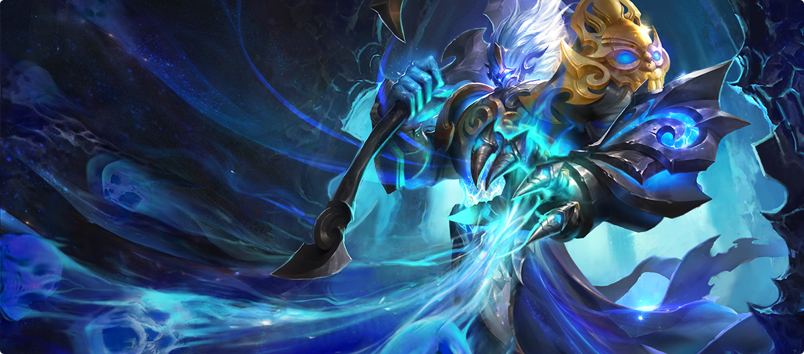

王者荣耀
一款手游如何成为一个时代的注脚
本栏目用四个页面拆解《王者荣耀》：它的来路与影响、六大职业的分工、铭文与装备的取舍，以及排位与巅峰赛构成的竞技阶梯。
十年时间，一款 MOBA 手游从「英雄战迹」走到亚运赛场；这条路径里有移动游戏的工业化，也有一代人的共同记忆。
本栏目内容
为什么值得单开一个栏目
《王者荣耀》大概属于那种「玩过的人很多、认真聊过的人不多」的游戏。它长期被当成一款社交产品来谈论，以至于背后的设计问题常常被略过：怎样把一套需要视野、走位与配合的 MOBA 玩法塞进一块触屏，怎样让一个没接触过同类游戏的新玩家在两三局之内看懂自己在做什么，又怎样在十年里持续更新内容而不让老玩家失去耐心。
2015 年 11 月 26 日，腾讯天美工作室群把这款游戏推上线。它最初叫《英雄战迹》，随后改名为《王者联盟》，最终定名《王者荣耀》。相比它在端游上的同类作品，这款游戏主动削减了复杂度——更少的主动装备、更短的单局时长、更宽容的操作判定。这种「做减法」在当时被视为对硬核玩法的背叛，事后却被证明是它能跑进千万级用户的关键。
十年之后回头看，它已经不只是一个产品：国服日活跃用户突破 1.39 亿，全球月活跃用户超过 2.6 亿；KPL 职业联赛从一间小型演播室起步，2025 年的年度总决赛落地国家体育场「鸟巢」；2025 年 7 月，它入选 2026 年名古屋亚运会的电竞项目。本栏目想讨论的，正是这条路径上的具体问题，而不是它的热度。
四条线索，四个页面
栏目内的四个三级页面各负责一条线索，彼此可以独立阅读，也可以按顺序读完。
峡谷初印象
从 2015 年 11 月 26 日的公测说起：名称的两次更迭、用户规模的三级跳，以及 KPL 九年走到「鸟巢」的过程。
六职百相
坦克、战士、刺客、法师、射手、辅助——六个职业如何划分分工，又怎样拼成一套能赢的阵容。
铭文与装备
对局前配好的铭文是「底子」，对局中逐件购买的装备是「变量」，两者共同决定英雄的强度曲线。
排位征途
七大段位、巅峰赛积分与赛季更替，构成了这款游戏里最长的一条成长线。
如果只想看一个页面，建议从「峡谷初印象」开始——后面三页讨论的所有系统，都建立在这款游戏「先做到能玩、再做到好玩」的前提之上。
{kind=link}

- 想了解这款游戏从哪来、为什么成功：看峡谷初印象。
- 想知道自己该玩什么位置：看六职百相。
- 想弄明白为什么同样的英雄打出的伤害不一样：看铭文与装备。
- 想搞清楚段位和巅峰赛的区别：看排位征途。
- 《王者荣耀》2015 年 11 月 26 日上线，名称经历《英雄战迹》→《王者联盟》→《王者荣耀》三次变化。
- 它成功的重要原因之一，是把端游 MOBA 的复杂度主动做了削减，换来更低的上手门槛。
- 2025 年 10 月，国服日活跃用户突破 1.39 亿，全球月活跃用户超过 2.6 亿。
- 本栏目分四个页面：峡谷初印象、六职百相、铭文与装备、排位征途。